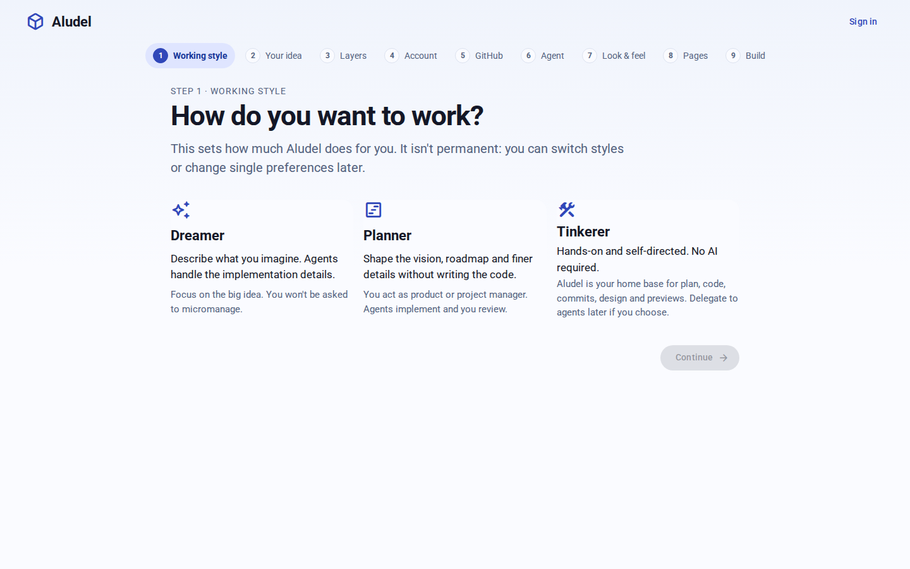

New project
Do you have code already?
Aludel can start a new app for you, or work with one you already have.
Start a new app
Today's onboarding
This path continues exactly as it does now: working style, your idea, layers, account, GitHub, agent, look & feel, pages and build. The only change is that the import option leaves its GitHub step.

Step 2 · Working style
How do you want to work?
This sets how much Aludel does for you. It isn't permanent: you can switch styles or change single preferences later.
Unchanged from today's step.
Step 3 · Account
Sign in with GitHub
Your repository is on GitHub, so your Aludel account starts there too. Aludel sees only the repositories its GitHub app is installed on.
Signed in as henrydker
Step 4 · Repository
Which repository?
Repositories the Aludel app can reach on GitHub.
Step 5 · Code
Where is the code?
Edit paths
Step 6 · Layers
Which layers?
Code reads the repository. The other layers start empty, and you fill them in as the project goes.
Step 7 · Connect
Ready to connect
Check what Aludel will do, then connect.
Connected
Aludel is connected
New commits on main on GitHub are picked up on their own. Work items in this project merge into it when you close them out.